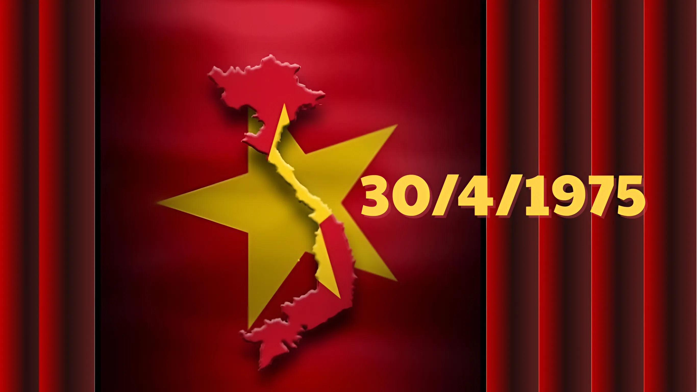
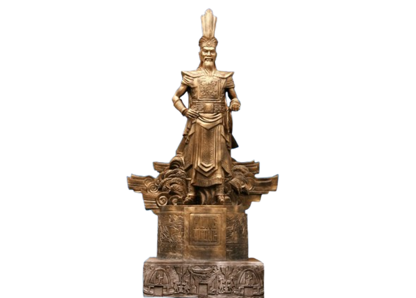
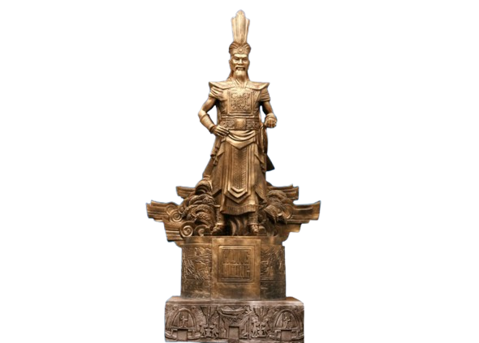
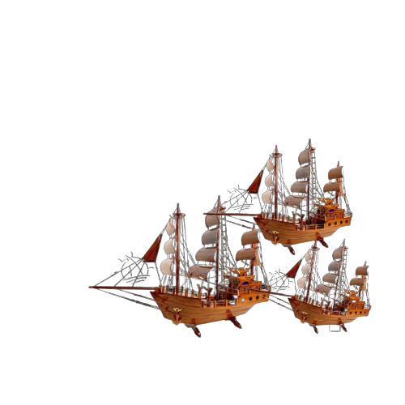
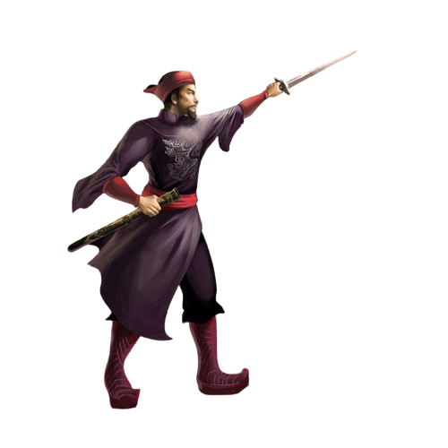
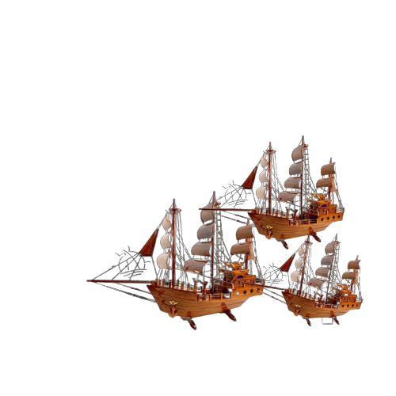
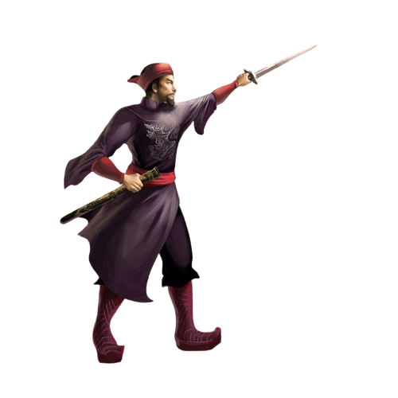

Khắc ghi lịch sử
tự hào Việt Nam
Khắc ghi lịch sử
tự hào Việt Nam
Dòng thời gian
Hành trình khám phá nghìn năm lịch sử Việt Nam
 


 



 Anh hùng Lê Lợi (1383 - 1433)
Anh hùng Lê Lợi (1383 - 1433)
30/4/1975
NGÀY GIẢI PHÓNG MIỀN NAM
THỐNG NHẤT ĐẤT NƯỚC
Chiến dịch Hồ Chí Minh lịch sử - chiến dịch quyết chiến, chiến lược trong tổng tiến công và nổi dậy mùa Xuân 1975 - là mốc son chói lọi, đánh dấu cuộc kháng chiến chống Mỹ, cứu nước đã kết thúc thắng lợi và nhân dân Việt Nam đã thực hiện trọn vẹn tư tưởng chỉ đạo của Chủ tịch Hồ Chí Minh "đánh cho Mỹ cút, đánh cho ngụy nhào"; giải phóng hoàn toàn miền Nam, thống nhất đất nước.
Bản đồ chiến dịch Hồ Chí Minh
Từ nhận định dù Mỹ có chi viện cũng không cứu vãn được sự sụp đổ của quân ngụy, Bộ Chính trị quyết định mở cuộc tổng tiến công và nổi dậy giải phóng Sài Gòn trong thời gian sớm nhất, tốt nhất là trong tháng 4-1975, trước mùa mưa, không thể để chậm. Ngày 7-4-1975, Đại tướng Võ Nguyên Giáp, Bộ trưởng Bộ Quốc phòng ra lệnh động viên “Thần tốc, thần tốc hơn nữa, táo bạo, táo bạo hơn nữa, tranh thủ thời gian từng phút, xốc tới mặt trận, giải phóng miền Nam. Quyết chiến và toàn thắng”. Ngày 14-4-1975, theo đề nghị của Đảng ủy - Bộ Tư lệnh chiến dịch và Quân ủy Trung ương, Bộ Chính trị đồng ý chiến dịch giải phóng Sài Gòn lấy tên là “Chiến dịch Hồ Chí Minh”.
Đại tướng Võ Nguyên Giáp ( 1911 - 2013 )
Bức thư điện lịch sử của
Đại tướng Võ Nguyên Giáp (Ảnh tư liệu)
Theo kế hoạch, đúng 17 giờ ngày 26-4-1975, Chiến dịch Hồ Chí Minh
bắt đầu nổ súng. Từ 5 hướng, các binh đoàn thọc sâu có xe tăng dẫn
đầu đánh vào khu vực phòng thủ vòng ngoài của địch. Từ ngày 26 đến
ngày 28-4-1975, các cánh quân của ta liên tục đột phá tuyến phòng
thủ vòng ngoài, đánh chiếm nhiều mục tiêu quan trọng của địch ở
Long Thành, Biên Hòa, Đức Thạnh, thị xã Bà Rịa huyện Long Điền,
Đất Đỏ…; đặc công đã chiếm một số cầu, thực hiện tốt ngăn chặn chủ
lực của địch ở vòng ngoài, không cho chúng co cụm, triệt để bao
vây cô lập Sài Gòn.
Chiều ngày 28-4-1975, Phi đội Quyết Thắng sử dụng 5 chiếc máy bay
chiến đấu A-37, cất cánh từ sân bay Thành Sơn (Phan Rang) ném bom
sân bay Tân Sơn Nhất, phá huỷ nhiều máy bay. Trận đánh diễn ra bất
ngờ, làm tê liệt cầu hàng không di tản của Mỹ, khiến cho tình hình
ở Sài Gòn càng thêm rối loạn, tinh thần binh lính suy sụp, đẩy
nhanh quá trình tan rã của chế độ ngụy Sài Gòn.
Sáng ngày 29-4-1975, các cánh quân của ta được lệnh tổng công kích
đồng loạt trên toàn mặt trận, tiếp tục ngăn chặn và tiêu diệt các
lực lượng chủ lực chủ yếu của địch ở vòng ngoài, đồng thời phối
hợp với lực lượng tại chỗ đánh chiếm những địa bàn quan trọng ở
vùng ven, chuẩn bị tiến công vào nội đô Sài Gòn. Nắm chắc tình
hình quân địch đang hoảng loạn và tan rã, Bộ Tư lệnh Chiến dịch
quyết định chớp thời cơ, tiếp tục phát triển tiến công vào nội đô
theo đúng kế hoạch, tập trung lực lượng đánh chiếm các cơ quan đầu
não của chính quyền và quân đội ngụy Sài Gòn.
Sáng 30/4, trong thế thua đã rõ ràng, địch xin ngừng bắn, bộ đội ta vẫn kiên quyết tiến công. Các quân đoàn nhanh chóng đánh chiếm các mục tiêu. toàn bộ các cánh quân lớn của ta từ 4 hướng đồng loạt tổng công kích vào nội đô Sài Gòn. Vào lúc 11h30 trưa, xe tăng số hiệu 390 húc đổ cánh cổng chính Dinh Độc Lập. Ngay sau đó, lực lượng Giải phóng tiến vào bên trong, Tổng thống ngụy Dương Văn Minh tuyên bố đầu hàng vô điều kiện. Cờ giải phóng phấp phới tung bay trên nóc tòa nhà chính của Dinh Độc Lập. Chiến dịch Hồ Chí Minh toàn thắng.

Hình ảnh xe tăng hút đổ
cánh cổng Dinh Độc Lập (Ảnh tư liệu)
Cờ Mặt trận Dân tộc Giải phóng
miền Nam Việt Nam tung bay trên nóc Dinh Độc lập,
11 giờ
30 phút ngày 30-4-1975 (Ảnh tư liệu)
Chiến dịch Hồ Chí Minh kết thúc chỉ sau 5 ngày với thắng lợi tuyệt đối. Chính quyền Sài Gòn sụp đổ hoàn toàn. Miền Nam hoàn toàn giải phóng. Với thắng lợi của Chiến dịch Hồ Chí Minh lịch sử, quân và dân ta đã đập tan toàn bộ bộ máy chiến tranh to lớn hiện đại của chính quyền tay sai Mỹ ở miền Nam và quét sạch bộ máy ngụy quyền mà đế quốc Mỹ đã ra sức xây dựng hơn 20 năm, giải phóng toàn bộ miền Nam, thống nhất đất nước; đưa dân tộc ta bước vào kỷ nguyên mới, kỷ nguyên độc lập dân tộc và chủ nghĩa xã hội.
TƯ LIỆU LỊCH SỬ NGÀY GIẢI PHÓNG
NGÀY GIẢI PHÓNG TRONG ỐNG KÍNH
Những thước phim, hình ảnh lịch sử quý báo chứa đầy cảm xúc trong chiến dịch Hồ Chí Minh.
NHỮNG NGƯỜI VIẾT NÊN CHIẾN THẮNG
Họ là những con người đã khắc tên mình vào lịch sử bằng lòng yêu nước và sự hy sinh cao cả.
CHÚNG TÔI ĐÃ SỐNG TRONG NGÀY ẤY
Câu chuyện Ngày giải phóng qua lời kể của những người trực tiếp chứng kiến.